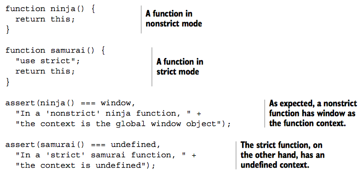

We say that a function is invoked “as a function” to distinguish it from the other invocation mechanisms: methods, constructors, and apply/call. If a function isn’t invoked as a method, as a constructor, or via apply or call, it’s invoked as a function.
